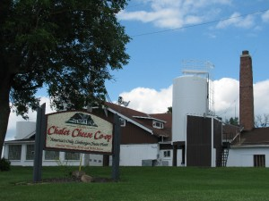

Small History of Cheese
Manufacture of Cheese in America
Cheese has been produced in America since early in the 17th century when English Puritan dairy farmers brought their knowledge of dairy farming and cheesemaking with them from the Old World to the New English colonies. After the introduction, the manufacture of cheese in America moved from east to west mostly in the northern part of the nation.
Wisconsin’s 1st Farmstead Cheese Factory
In 1831 Wisconsin’s first farmstead cheese factory was opened in Koshkonong. In 1841 Mrs. Anne Pickett established Wisconsin’s first “cottage industry cheese factory” using milk from neighbors’ cows. Seventeen years later John J. Smith obtained Wisconsin’s first cheese vat and made cheese at home in Sheboygan County. Swiss immigrants opened a farmstead cheese factory in New Glarus (a small community in southwest Wisconsin) in 1846 with cows imported from Ohio. Cheese was manufactured at this point by women on the farm.

Commercial Cheese Factories in Wisconsin Peaked
The number of cattle increased consistently from 1900 to 1950 where it reached 2.5 million. During that time the amount of milk produced per cow also increased to 5500 pounds per year or about 20% more than the national average. Cheese production rose to 148 million pounds in 1910, 363 million pounds in 1925 and 561 million pounds in 1950. The number of rural crossroads commercial cheese factories in Wisconsin peaked at 2807 in 1922. A steady decline in total number of cheese factories occurred over the next 80 years due to consolidation, elimination of marginal plants during the depression and World Wars, retooling of cheese plants to process condensed milk and butter for the Chicago/Milwaukee milk shed, and improved, more efficient technology, and ability to pick up and truck milk for longer distances.
Europe Settlers Chose Wisconsin because of its place in the World of Cheesemaking
Midway through the twentieth century there were seven distinct regions of cheese production in Wisconsin including the Southwest Foreign type region mentioned above. Geographically speaking the specialized cheese producing regions formed a crescent in the state, with the horns in the Southwest and Northwest, and the body along the eastern lake shore. During this period cheese and cheesemaking became a major part of Wisconsin agriculture and Wisconsin cheesemakers began to take a leadership role in the future success of this industry in the world scene. Part of the energy which enabled Wisconsin’s cheese industry to maintain its focus from the very beginning was the continued influx of people immigrating to the United States from foreign lands. These men and women represented almost every country in Europe and they chose Wisconsin because of its place in the world of cheesemaking. They arrived with a strong work ethic, determination, treasured family secrets, and a desire to continue the tradition of making popular cheeses from the old country.
